Cloud computing and microservices have become a dominant theme in the software architecture world. Microservices have added complexity to an era in which security attacks are far too common, and they have raised the importance of security practitioners in every organization.
This is a story (that I heard for the first time on YouTube) that may sound familiar to many of you. A fast-paced company is building a microservices-based application and you are on the security team. It is possible that you have stakeholders, such as a CEO or a product manager, who want your product to be launched in time to gain market share. The developers in your company are doing their best to meet deadlines and ship code faster. You are brought in at the end of the process, and your mandate is to make sure that the final product is secure. This should immediately raise red flags to you. If the product is developed independently of you (the security team), you will be the only ones standing in the way of a product that adds value to the company. In my experience, in many dysfunctional firms, security professionals have been viewed as naysayers by development teams, product managers, and other stakeholders at organizations.
The problem with superficial security initiatives is that they interfere with value-adding activities. Bad security initiatives are notorious for causing frustration among developers. This is usually due to bad design and poor implementations, both prevalent in the industry. Hence, security policies are, at times, associated with “corporate bureaucracy” and have led, in my experience, to some unpleasant conversations in meeting rooms. This has compelled many developers to sneak around security measures to develop faster. More importantly, since a lot of security initiatives were framed before the era of cloud computing or microservices, they fail to incorporate some of the benefits that new software designs and technologies provide you.
Clearly, there has to be a better way. In this chapter, I aim to show you how incorporating security in the architectural phase of microservice design and then using some of the tools that AWS provides can help in creating systems that are simple, secure, and quick to develop at the same time. I start by talking about some desirable traits in secure systems that are correlated with better security outcomes. I then explain how microservices can help you create systems that have these desirable traits. And finally, I go into how AWS can help you in designing these microservices and scaling them to build a secure system.
Before I go into the fundamentals of cloud security, let’s define some basic information security terms since many of them are used interchangeably, sometimes causing confusion:
The process of security design includes identifying the controls that can be implemented to reduce the aggregate risk in an organization. For example, organizations where network systems run without firewalls have a higher aggregate risk than those with well-configured firewalls, which is why firewalls are recommended by most security professionals. More specifically, security professionals may add firewalls as a countermeasure against the threat of unauthorized network access. In this case, they identified a potential threat and preemptively implemented a countermeasure to reduce the probability or impact of the threat (and thus, by definition, reduce the risk of the application). This process is known as threat modeling.
Many security firms have extensively studied and prepared frameworks for identifying common threat scenarios. One example of a great framework is the Lockheed Martin cyber kill chain, which identifies what the adversaries must complete to achieve their objective.
Security controls are said to be blunt if they unilaterally block all requests without trying to understand their context or specifics (for example, a fence around a house that blocks everyone from crossing over regardless of whether they own the house or not). Controls are said to be precise or sharp if they identify and block specific (potentially unauthorized) requests (for example, a lock on a door that allows those with a key to open it, thus not barring legitimate users, but blocking anyone without access to a key). As a rule of thumb, blunt controls are generally strong and easy to implement. However, they may also cause friction among legitimate users and may prevent employees from doing their jobs. On the other hand, sharp controls can take a significant amount of time to tune properly, even though they are effective. Depending on the application, both of these types of controls may be required to prevent different types of attacks. In Chapter 2, I will talk about authorization and authentication controls which are extremely sharp and can provide granular protection against potential threats to the organization. In Chapter 5, I will discuss network security, which acts as a powerful but blunt instrument.
Some controls may not be targeted specifically at potential threats and yet can reduce the aggregate risk of the application. As an example, implementing proper monitoring and alerting may result in quick action by the security team. Organizations may choose to implement strong monitoring systems, called detective controls, to dissuade malicious actors from attacking such systems, thus reducing aggregate risk.
You can think of controls as levers that security professionals can pull in any organization to adjust the security posture and the aggregate risk of any application.
It might be tempting to take on every potential threat and implement strong controls against every vulnerability. As with all aspects of software engineering, however, there are trade-offs to this idea.
Many organizations adopt a piecemeal approach toward security controls instead of a holistic one. Very often I find myself in the following situation:
A security professional identifies a very specific vulnerability.
The organization identifies a control or marketplace product that addresses that vulnerability.
The vulnerability may be addressed by the solution from Step 2, but a wider set of vulnerabilities may continue to exist. Such a control may provide a solution without considering the broader implication of the change on the overall application.
Either the control may be too precise, and hence over time additional controls may be required, or the solution may be too broad and hence may get in the way of legitimate activities that developers may perform.
Since point solutions (solutions that have a narrow, specific goal) often have side effects, such as developer friction, it is almost impossible to quantify the true cost of a security control compared to the potential impact of the risk. A number of factors can limit organizations’ ability to mitigate individual vulnerabilities, such as costs, timelines, and revenue targets.
A security policy is an abstract plan that lays out broader the vision for identifying and implementing security controls. Security policies define the role security and controls play in an organization. The purpose of a security policy is to quantify and compare the cost of a potential incident against the cost of implementing a countermeasure. The cost can either be a monetary cost or a cost to the operational efficiency of the organization (something that gets in the way of value-adding activities). The security policy provides the security team with a high-level vision that helps them choose the right controls for the job and decide whether the controls in place are acceptable or need to be sharpened in order to be effective.
If security controls are the levers that can be used to adjust the potential risk of an application, a security policy guides how much each of these levers needs to be pulled to find the sweet spot that is acceptable to senior management. A security policy should be high level and should identify a broad range of threats that you want to protect against. This will allow its implementers to innovate and come up with a broader set of tools that fit well into your organization.
While designing a security policy, it is important to think about the three types of threats: possible, plausible, and probable. A lot of threats are possible. A significantly smaller subset of these threats are plausible. And an even smaller subset of threats are probable. For companies where the impact of security incidents is not significant, it may not be prudent to set up controls against every possible threat, but it may certainly be a good idea to set up controls against all the probable ones. On the other hand, a company operating in a sensitive industry may not be able to afford to ignore some possible threats, even if they are not plausible or probable.
This book’s main goal is to help organizations frame and implement controls based on a well-framed security policy. To determine the effectiveness of controls within organizations, several metrics can be utilized, such as the Center for Internet Security Benchmarks.
A security incident is said to occur when a potential threat is realized—in other words, a vulnerability has been exploited (possibly by a malicious actor).
Any security incident can compromise one of three different parameters: confidentiality, integrity, and availability. Together, these are called the CIA triad of information security:
Any security incident or attack may have a negative impact on one or more of these parameters. As security professionals, our job is to quantify the impact of such a risk and compare that to the cost of the countermeasures that may have to be put in place to prevent it from happening.
Designing secure systems involves looking at software applications by taking a high-level systems view. Architects generally aim for the forest instead of trees and frame abstract design principles, while leaving the implementation for the developers. A secure architecture design acts as an enabler for better security controls. You can boost the security posture of your application by following some fundamental security principles when designing the application. You can learn a great deal about the principles of security architecture in the book Enterprise Security Architecture by Nicholas Sherwood (CRC Press).
Although the principles of information security architecture predate microservices and cloud systems, researchers have discovered ways to leverage the benefits of cloud-based microservice systems to reduce the aggregate risk of your application. I review some of these architectural patterns in this section. These patterns are not mutually exclusive. With their help, I will lay the case for why cloud-based microservices reduce the risk to your applications.
Most modern-day applications are complex. A systems approach to software development considers a software application to be made up of smaller, easier-to-manage modules. A modular application is one that can be broken down into smaller pieces that can be worked on independently. A modular application is easier to patch and hence easier to eliminate vulnerabilities from. Modularization is the key benefit that microservices provide.
From the point of view of security professionals, it is easy to frame a security policy for modular applications since such a policy can be more flexible and can better fit the contours of your application.
Simple systems are easier to secure than complex ones. Complexity of software can be destabilizing if you cannot manage it well. Vulnerabilities in small, isolated applications are easier to spot and patch than are those of larger complex projects. If you want a building metaphor, small buildings with limited entrances are easier to secure than complicated mazes. Thus, if your applications are small, you can eliminate vulnerabilities before they become threats, and thus reduce the risk to your applications.
A large modular application composed of smaller, simpler modules ends up being easier to manage and secure. Thus, a guiding principle while designing secure applications is to make them as simple as possible. Any deviation from simplicity should be evaluated, not just in terms of manageability but also for security since it is inherently harder to secure complicated applications.
In my experience, the terms complex and complicated are used interchangeably to describe software architectures. In reality, though, they are not the same. A software architecture is complex if it is made up of a vast number of smaller but simpler applications. Complexity is a necessary consequence of scale. Complicated software is software that may be monolithic and may involve large components that may not be easy to understand or secure. Complicated software may require specialized skill to maintain. Organizations should avoid making their applications complicated.
I mentioned the AWS SRM, where I talked about how AWS is responsible for the “security of the cloud.” AWS managed services are a way to offload additional responsibility onto AWS.
In a managed service, AWS assumes a larger share of the responsibility of running a specific piece of infrastructure for the user. In the case of running MySQL, AWS offers the AWS Relational Database Service (RDS), which offers multiple MySQL options to end users. On AWS RDS, AWS assumes the responsibility of running and patching the database engine as well as the underlying operating system. AWS keeps the underlying operating system current and eliminates any vulnerabilities that may exist on it.
Just because you use an AWS managed service does not automatically mean that you have zero security responsibilities. You may still be responsible for controlling access to the services and configuring firewalls and other basic security measures. Any time you use a managed service, it is important to figure out how much of the security responsibility is assumed by AWS and how much is still on you as the customer.
With managed AWS services, you can reduce the responsibility of your security team and scale your organization without losing focus. If you replace an existing component of your infrastructure with an AWS managed service, you can trust that AWS will provide you with the right countermeasures to reduce your application’s risk.
The use of managed services may reduce the burden of meeting compliance requirements as well, since most managed services are compliant with most regulatory requirements (HIPAA, HITRUST, GDPR, SOC, NIST, ISO, PCI, and FedRAMP). Throughout the book, I will recommend the use of a fleet of managed AWS services that help in increasing the security.
Let me take you back to the process of threat modeling. In this process, you identify vulnerabilities in the application and then start thinking of potential threat actors who could exploit these. You build hypothetical scenarios where you assume that the malicious actor has indeed exploited this vulnerability and has caused unauthorized issues to your application, affecting any of the CIA metrics that you have been tracking.
The parts of your application that the hypothetical threat actor in your threat-modeling scenario may have influence over is called the blast radius (also known as attack surface) of your application.
In a well-architected system, you want to keep this blast radius at a minimum. That way, even if a threat actor is able to gain unauthorized access, the rest of the application is able to function. From an architectural standpoint, it is possible to achieve this goal of reducing blast radiuses by using the concept of isolation. You can think of a large modular application as a series of locked rooms in a building. The fact that one of the rooms was breached by an unauthorized person does not mean the other rooms will be as well. You can have a modular application in which individual modules are isolated from one another and require strong authentication. The threat actor can then be isolated to only the module they were able to breach, while keeping the rest of the application secure and functional.
Have you ever wondered why all airplanes still have ashtrays even though smoking has been banned in all commercial flights for decades? In the briefing before takeoff, you are reminded that tampering with the smoke detector in the lavatory is a criminal offense. There is also a sign in there reminding you of this law, but right below that sign, you’ll find an ashtray. In 2009, a flight was grounded for not having an ashtray.
The Federal Aviation Authority (FAA) explains that even though smoking is banned, some people still manage to sneak in cigarettes and smoke on flights. After smoking, passengers may throw cigarette butts in trash receptacles, which may be a fire hazard. Security-wise, this is a threat that increases the risk of an aircraft catching fire. Having an ashtray ensures that if people do somehow manage to bring cigarettes on the flight, they have a place to stub them safely. Ashtrays are the controls that reduce the risk of fire.
You might be wondering, seeing how dangerous smoking is on a flight, why aren’t greater security controls added at airports to ensure that passengers cannot bring cigarettes on board planes? Why require a costly installation of redundant ashtrays in every flight, all around the world?
The answer is in a security concept called defense-in-depth. In secure systems, multilayered, at times redundant, or even obsolete controls have been shown to be more effective than a single point-based solution. Having multiple controls dispersed at different layers rather than one perfectly reliable control is shown to result in a lower risk for the application. In designing each control, you assume that an upstream control failed at stopping an intruder. This ensures that there is no single point of failure. In the case of airlines, you assume that the airport security failed at catching the cigarettes, and hence the ashtray is used to further reduce the risk of fire.
In secure systems, you are often required to independently assess the efficacy of each of your controls. Many times, the presence of multiple controls may seem redundant, but with defense-in-depth, you can justify their presence and use. Throughout this book, I will recommend the introduction of multiple controls. As an example, in Chapter 5 I will recommend controls that work at the network layer, whereas in Chapter 7, I will discuss encryption in transit that primarily operates at the transport layer.
If you look around, you can see examples of defense-in-depth everywhere, in many different aspects of life. Buildings with sprinklers still have fire extinguishers. Buildings with strong security at the entrances still have locks on the doors of individual office spaces. Overlapping security controls are what protect us from the failure of individual controls, and embracing such a reality is what helps in the evolution of a secure-thinking strategy.
I start this section by admitting that I am a cynic of this approach. In this approach, organizations create a strong firewall against any requests that come from the public internet. This firewall is known as a perimeter, which is secured to protect your application against external threats. Remote employees are then provided with virtual private network (VPN) solutions to have a similar experience as their in-person counterparts. In the context of security, trust refers to accessing systems with little or no verification of who someone is or why they need this access. In this architecture, users or services within a trust boundary (generally within the organization’s data center or VPN) are trusted, and hence do not go through an additional layer of authentication. Here, the belief is that most attackers are external to the organization, and trusted users are assumed to have only the best intentions. Hence, controls in this architecture are directed mainly toward external threats. Many security professionals say that such an architecture tries to defend the castle against external attacks. Many regulators still require the presence of such a perimeter protection and hence, if you work in a heavily regulated industry, you may not have a choice around perimeter protection.
In recent years, it has become apparent that both external and internal attackers pose serious threats to organizations. The notion that robustly securing the perimeter is enough to achieve security is outdated. A zero trust architecture is therefore employed in many modern organizations. A zero trust architecture assumes that threats to your application are omnipresent (internal and external to the organization). Thus, you cannot trust internal services and must implement controls, assuming there are malicious actors working well within your trust boundaries. In other words, this model assumes that the attackers are already inside your castle walls and, instead of protecting your castle, you must think of individually protecting all your resources. Many recent high-profile incidents have indeed been caused by trusted insiders or malicious actors posing as insiders, as seen in the 2019 Capital One breach. Hence, a zero trust architecture is preferred.
Chapter 8 will introduce you to some of the tools that AWS offers, which will help you implement zero trust architecture in your organization while reducing friction with your development team.
I’m not the only one in favor of a zero trust architecture. On May 12, 2021, US president Joe Biden signed an executive order that aims at improving the US information security architecture. As part of this order, the federal government has been tasked, among other things, to “develop a plan to implement zero trust architecture.”
Although you may already be aware of the basics of microservices and their advantages, I want to spend a little time providing a refresher on the basics of microservice design. Application architecture usually takes a systems approach toward software design. The majority of enterprise software consists of smaller parts that are put together to create the desired system.
Consider a typical ecommerce website application. Assume this application supports four end-user actions:
A user can buy an item.
A user can return an item.
A user can check their balance.
A user can check the available supply of inventory.
The goal of a tiered (layered) architecture is to have presentation (user interface), application management, and data management functions separated from one another. This style of architecture has been the de facto standard for most applications, primarily because of its simplicity, familiarity, and low cost. Figure 1-1 shows a typical tiered application.
The layered architecture style, while having many advantages, also has some distinct disadvantages. One of these is the lack of agility and scalability, which has led to the discovery of other architectural styles. Authors Neal Ford and Mark Richards, in their book Fundamentals of Software Architecture (O’Reilly), discuss in detail all the pitfalls of such a design.
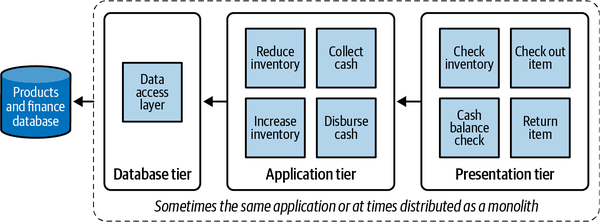
A contrast to the traditional tier-based approach is domain-driven design (DDD). In DDD, it is assumed that every software program relates to some activity or interest of its user or the business function. An architect can divide the application in a way that aligns with its business and functional units by associating application logic to its functional domain (and at times, more granularly into subdomains).
For example, if you were to group the services from Figure 1-1 based on their domains (and subdomains), you would see three functional domains that exist:
If you are to partition the services from Figure 1-1 into functional domains, it might look something like Figure 1-2.
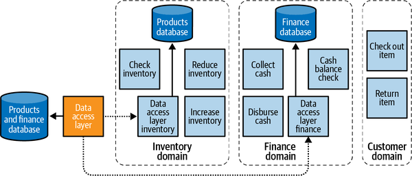
In a domain-driven approach, services that satisfy a common business domain are more likely to have a strong relationship with one another and, therefore, make sense to be grouped together. Additionally, DDD makes it easier to manage larger business projects by aligning the software architecture with the business requirements more closely. Such groups are generally called bounded contexts where services within a bounded context share a close relationship with one another, while any interaction with any external entity can be thought of as a formally defined contract. Conversely, all services within bounded contexts should only have loose relationships with any service that is outside their bounded contexts.
Within a bounded context, applications are designed for interoperability. They speak the same proverbial language. In an ideal world, a bounded context and a subdomain should have the same constituent services. In practice, however, especially when legacy software systems are involved, there may be some differences.
So what makes any architecture a microservice architecture? Unlike a monolithic application, a microservice-based application is made up of a large number of lightweight services, which are:
A key step in defining a microservice architecture is figuring out how big an individual microservice has to be. What differentiates a microservice from a regular application, though, is that a microservice is required to follow the SRP.
The SRP proposes that every microservice encapsulates a single part of an application’s functionality. This ensures that each microservice is lean, lightweight, deployment agnostic, and simple to understand.
If you search for online literature on microservices, you often find them generally compared to LEGO® bricks. A microservice architect views any large application as consisting of several microservices that are patched together, similar to a LEGO construction. Within these applications, individual microservices are expected to follow the SRP. These individual services are also supposed to be autonomous and should have limited or no dependence on other services.
Throughout the book, I will be referencing the SRP quite frequently. It is the single most important principle to remember while designing microservice architectures.
In “Cloud Architecture and Security”, I promised you that cloud microservice architectures will help in realizing the secure design patterns I mentioned in the section. With the help of the formal definition of microservices, I am sure you can see why:
To sum up, microservices are atomic and discrete business functions, each with one function. Microservice developers should be free to choose the tool that provides them with the best return while designing their specific microservice to perform the single task that it is supposed to perform. As an architect who is responsible for integrating these individual microservices into a bigger, cohesive application, the most important thing you should care about is the business function of the microservice. Everything else is background noise and should not drive policy decisions.
There is no rule regarding how a microservice should be actually implemented. Nevertheless, it is important to modularize the application and loosely couple these modules so that these services can be swapped out, upgraded, replaced, or scaled on their own.
Over the last few years, due to various reasons, there has been a consolidation in the industry where many organizations have decided to adopt one of two ways:
Both options have advantages and limitations from a security and scalability perspective. There is a lot of online literature on both approaches and their trade-offs. (One great article I read on container-based microservices was in a blog from Severless.) Throughout this book, I will focus on ways to increase security around both of these approaches by leveraging the tools that AWS provides us with.
Going back to the SRP, since everything else outside the business function of the microservice is background noise, wouldn’t it be great if we could package the business function and all its dependencies into a dedicated, sandboxed virtual environment and deploy it everywhere? This is the container approach to microservices.
In this approach, all the business logic, along with any dependencies, is packaged into a lightweight, portable, deployable container. This container contains the business function that the microservice is supposed to perform, along with the exact instructions that are needed to run this application code anywhere, on any environment that supports running such a container. The same container (along with its application logic) is tested across different development environments and deployed to your application environment. This container can be scaled up, upgraded, or swapped out depending on the needs of the application. Docker has proven to be a popular container technology in the industry, so for the purpose of this book, I will be using Docker for my examples.
Your entire application is now a mesh of such containers providing the business functionality that is needed to run the application. When implementing a container-based approach, the architect typically creates a document (called a spec), which specifies which containers should run in production, creating the blueprint of your entire application. As long as all the services defined in the spec are available, the application is deemed to be healthy.
Figure 1-3 shows such an application where containerized microservices are deployed to provide a unified product offering.
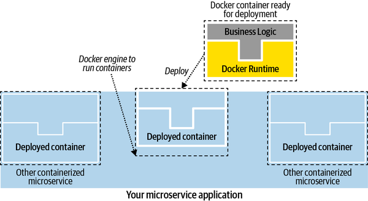
From a security perspective, you rely on Docker to isolate and containerize the business logic. Multiple containers may run on the same physical server, and therefore you rely heavily on the Docker engine’s ability to isolate each container from interfering with code running on another container. Any vulnerability that enables services from one container to interfere with the host operating system or another container is called a breakout vulnerability. So, in technical terms, you rely on Docker to assume the responsibility of preventing breakouts. This means it is critical to ensure that you run the latest versions of both the Docker container as well as the engine that runs these containers.
These containers are typically stored in a container registry, a specialized storage system for Docker containers. On AWS, these containers can then be securely stored inside Amazon Elastic Container Registry (ECR).
For a detailed overview of Docker, I recommend the book Docker: Up and Running by Sean Kane and Karl Matthias (O’Reilly).
Although each Docker container is a unit-of-deployment, in most production environments, you want to bind them together to work as a cohesive unit. Container orchestrators such as Kubernetes are what enable you to run multiple Docker container-based microservices. You can instruct a Kubernetes cluster to run a certain number of instances of each of the Docker containers, and Kubernetes can run them for you.
Setting up a Kubernetes cluster is the sole topic of many other books and hence I will not go into the details. But I will give you the gist of what a Kubernetes cluster does for you. If you’re more interested in the setup process, I recommend Kubernetes in Action by Marko Luksa (Manning Publications). The official documentation for Kubernetes also has some great material that can help you run your clusters. Kubernetes, as you may know, is an orchestrator that you can use to run any number of services at any time. If you provide Kubernetes with a spec of the number of instances of each service you want to keep running, it will spin up new containers based on the configuration you define in the spec.
The most basic microservice unit in a Kubernetes cluster is called a pod. A pod is a group of one or more containers, with shared storage and network resources. A node is a worker machine in Kubernetes and may be either a virtual or a physical machine. Kubernetes runs your microservices by placing containers into pods to run on nodes. As you can imagine, you can scale individual microservices by adding new pods to your cluster. Pods virtualize the runtime of your microservice. Pods run on underlying hardware that can be scaled by adding new nodes to the cluster. The part of the Kubernetes cluster that administers and facilitates the orchestration of the pods is called the control plane. Figure 1-4 illustrates this setup.
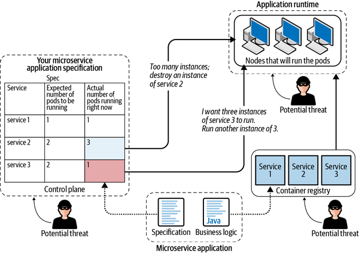
To sum up, in a Kubernetes setup, the main goal is to run the application logic, which is then containerized and stored in a container registry. Based on the specifications you provide to this cluster, containers execute this business logic on the nodes. Malicious actors could target either the control plane, the container storage, or the application runtime environment (nodes) in order to cause unwanted issues in the application.
I think of the specification as the recipe that I provide to my Kubernetes cluster. Based on this recipe, Kubernetes makes a list of all the services (containers) that it needs to run, fetches all the containers from the container registry, and runs these services on my nodes for me. Thus, it spins up an entire microservice application based simply on my spec. You can configure where these microservices, which are specified in your spec, run by configuring the nodes in your cluster.
AWS provides you with two managed options to run your Kubernetes cluster:
AWS Elastic Kubernetes Service (Amazon EKS)
AWS Elastic Kubernetes Service, Fargate Mode (Amazon EKS Fargate)
Since AWS assumes the responsibility of running, scaling, and deploying your functions onto AWS Lambda, you do not need a separate orchestrator.
So how do you decide how to run your microservices? Because security is the concern, I have created a handy flowchart that you can follow to make such a decision, shown in Figure 1-5.
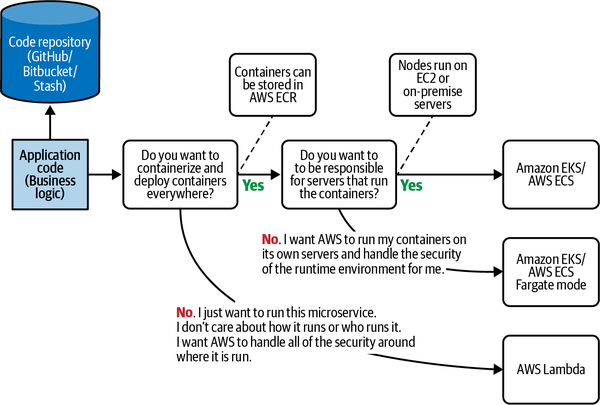
The next section goes into the details of these implementation methods.
AWS Elastic Container Service (AWS ECS) is also an option if you want to orchestrate containers on AWS. Although ECS differs slightly from EKS in its offering, there is a fairly large overlap between EKS and ECS from a security point of view. Hence, to avoid repetition, I will focus my attention on Amazon EKS and AWS Lambda. If you’re interested in an in-depth overview of ECS, apart from the AWS documentation, Docker on Amazon Web Services by Justin Menga (Packt Publishing) goes into the details.
FaaS is a different way of approaching microservices. AWS realized that the business logic is the core feature of any microservice. As a consequence, AWS provides an environment where users can run this logic without having to use containerization or packaging. Simply plug your business function, written in a supported programming language, into the cloud environment to run directly. AWS Lambda provides this runtime capability. Figure 1-6 shows a microservice application where AWS Lambdas are deployed to provide a unified product offering.
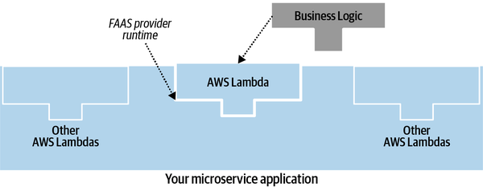
The great part of AWS Lambda is that AWS assumes the responsibility of running the function, thus taking away some of the security responsibilities from you as part of the SRM. In this setup, you do not have to worry about container security, running nodes, or securing any of the orchestration setup.
From a security perspective, there are many places where security professionals can anticipate security incidents in a microservice environment. A typical microservice is illustrated in Figure 1-7. This section briefly covers what each of these layers means and how an attacker could exploit your application at each of these layers to gain unauthorized control:
Also, sometimes called function or application logic, this is the application code that runs the core business function that your microservice aims to address. This code is very specific to the domain and should stick to the SRP. It may also be written in the user’s choice of programming language. Since this code is domain specific, it is possible for malicious actors to hijack this code to perform unauthorized activities.
The container environment should contain the language runtime environment that is required to run the application logic from component 1. This is the environment where the application logic runs in a sandboxed environment, thus isolating the runtime and containing the blast radius of the microservice (up to an extent). However, as with any application runtime, keeping the container version current and patching older vulnerabilities in the containers and their runtime is important to ensure securing your application.
This is the software that is capable of running containers from component two. Since microservices running in containers run in an isolated, sandboxed environment, it is important to make sure that security vulnerabilities in the virtualization layer of container runtime do not affect the host operating system or other containers running on the same machine. This isolation is the responsibility of the container runtime. Such breakout vulnerabilities may be identified from time to time and patched immediately by Docker. So it is important to continuously update the container runtime to ensure that you are running the latest Docker engine.
This is the virtual machine (VM) where you will be running the container engine. Each VM may contain multiple containers running containers; you can host multiple microservices on each VM. Since a VM is similar to any other operating system, attackers may be able to exploit OS-level vulnerabilities, especially with VMs not running the latest version of the operating system.
This is the most basic layer within the microservice infrastructure and refers to the physical hardware that may be providing the computational power necessary to run the microservices. Like any other physical item, these servers may be vulnerable to theft, vandalism, or hacking using flash drives or other physical devices.
It is common to store prebuilt containers as part of the development process in dedicated storage systems. If prebuilt containers are not stored securely, an attacker may be able to tamper with built images by injecting malicious code into them or swapping out images and replacing them with malicious code.
An orchestrator makes decisions on how many instances of a particular service need to be kept running to achieve application health. Orchestration allows you to build application services that span multiple containers, schedule containers across a cluster, scale those containers, and manage their health over time. An orchestrator is responsible for making sure that services are kept running or restarted whenever they go down. It can also make decisions regarding scaling up or scaling down services to match traffic.
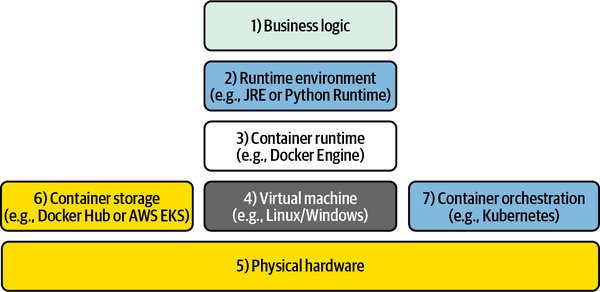
The next sections go over the various microservice runtime options and, from a security perspective, discuss your responsibilities as opposed to the responsibilities assumed by AWS. I start off with the option that assigns you with the most amount of responsibility within the three choices and then end with the option where AWS assumes most of the responsibility.
Control planes play a crucial role in a Kubernetes setup, since they constantly control application availability by ensuring that the runtime services act according to the spec. Given its importance, AWS provides users with a fully managed control plane in the form of Amazon EKS. Amazon EKS is a managed service that allows you to set up the Kubernetes control plane on AWS. By doing so, AWS assumes the responsibility of the infrastructure that runs the control plane that runs your cluster as part of the SRM. Having said that, you are still responsible for configuring and securing the settings that make this control plane secure.
Figure 1-8 illustrates the setup using Amazon EKS. AWS ensures that the risk of a malicious actor taking over your control plane is mitigated as part of the SRM. However, in Amazon EKS you are still responsible for running the nodes, so the risk of a malicious actor taking over your nodes still remains.
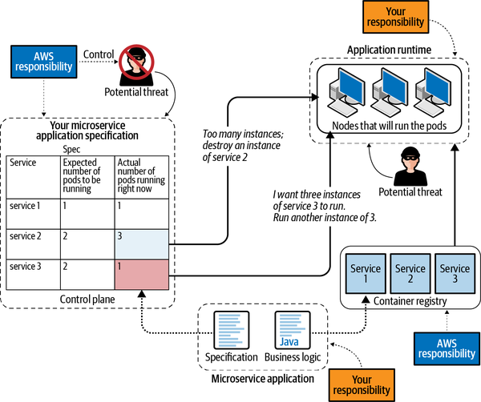
Figure 1-9 shows the split in responsibilities and how EKS leverages the AWS SRM to relieve you of some of the security responsibilities of running containers by comparing it with the model described in Figure 1-7.
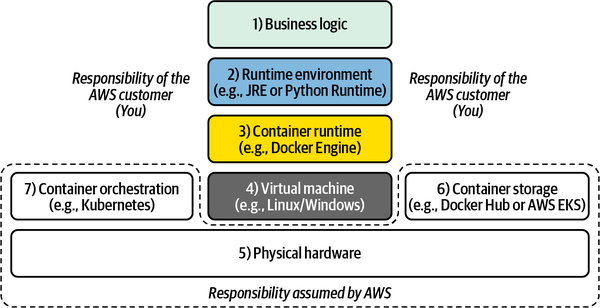
A shortcoming of the regular EKS mode, as described in the previous section, is that you have to bear the responsibility of running the nodes. For many administrators, this adds an extra set of responsibility that is, at times, unnecessary. If the only aspect of microservice architecture you care about is the single business function it provides, you may want to delegate the responsibility of running nodes to AWS.
This is where the Fargate mode comes into the picture. In Fargate mode, you can create the Docker containers you want to run in production, configure EKS to create a cluster of these containers, and then hand over these containers to AWS to run on their servers. In this way, AWS takes care of securing the servers, the operating systems on them (keeping the OS up to date), and maintaining network and physical security of the hardware that supports these servers—while you focus on the microservices themselves instead of the backend infrastructure.
Figure 1-10 shows the same architecture described in Figure 1-8, where it was running on the regular EKS mode. But this time, it runs in the Fargate mode.
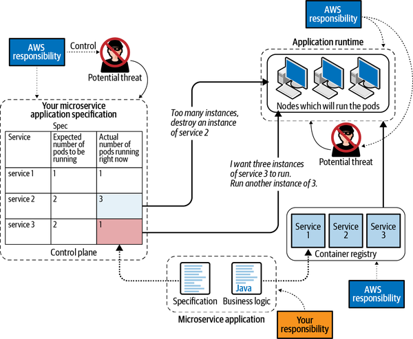
You can see how the responsibility for the nodes that ran the Docker engine is now assumed by AWS in the cloud, thus reducing your security responsibility. You are, however, still responsible for the containers themselves as well as the business logic that runs on these containers. You can also redraw the application runtime stack, as shown in Figure 1-11. As mentioned, the Docker engine is run on the nodes; hence its responsibility is assumed by AWS. You are only responsible for using the right Docker container and the business logic that runs on it.
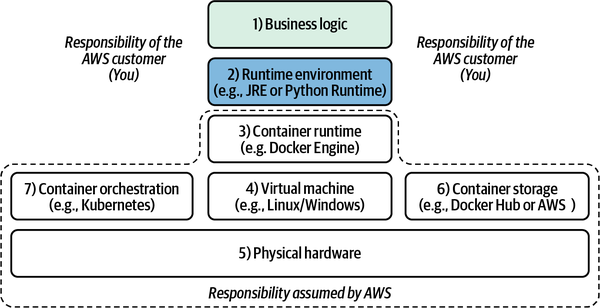
FaaS-based service is the final type of microservice that helps developers hit the ground running by assuming the responsibility for all types of security around running the service; therefore, developers can focus on the business logic instead of anything else. On AWS, AWS Lambda enables developers to run their function in a FaaS environment.
On AWS Lambda, the responsibility of implementing a majority of controls is assumed by AWS. However, you are still required to configure access and set up networking controls and other configurations to ensure that AWS can enable security on your behalf. AWS bears the responsibility of provisioning a server and running your code in a sandboxed environment, as long as it is written to the AWS Lambda specifications. AWS Lambdas are a powerful, scalable, and most importantly, secure way of running microservices on AWS.
The runtime architecture stack of microservices running on AWS Lambda can be seen in Figure 1-12. As mentioned, the customer is only responsible for the business logic while everything else is managed by AWS. In a Lambda-based architecture, you do not have to worry about patching the operating system, Docker versions, or anything related to the infrastructure.
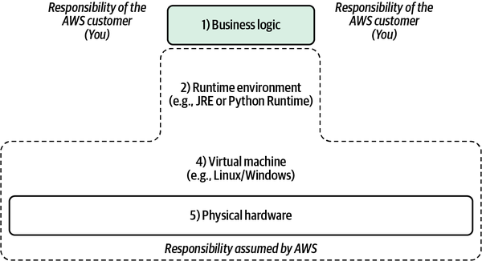
At the time of writing this book, AWS also allows you to run Docker containers on AWS Lambda. However, for the purposes of this book, I am restricting the scope only to running functions (FaaS).
Figure 1-13 illustrates how your security responsibilities change depending on your choice of microservice implementation.
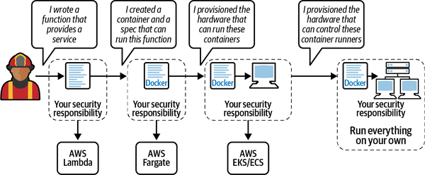
As an architect, you should decide how much responsibility you want to take upon yourself, in return for the flexibility you gain from running the application on your own terms.
Let’s go back to the LEGO analogy of microservices. What can you do with a single LEGO brick? Perhaps not much. How about 10 of them? Now you can make a few different shapes. A hundred LEGO bricks give you lots of possibilities. Most large applications will be created by composing hundreds of smaller microservices, all working with one another and, more importantly, communicating with one another. Since communication links are the weakest links in any application, this interservice communication adds to the aggregate risk of the application. You have to secure new channels of external communication instead of the familiar in-memory calls, as may happen with monoliths. As a result, much of this book is dedicated to securing interservice communication. To illustrate how security concepts will be applied throughout this book, I would like to briefly discuss some of the many patterns that architects use in microservice communication. These examples do not constitute an exhaustive list, and many other communication patterns are followed in the industry. The Microservices.io blog or the Microsoft architecture ebook are great resources if you’re interested in other microservice communication patterns.
The simplest way of communicating between contexts is by directly sending messages to each other (generally through HTTP requests). In this example, whenever a customer checks out an item, the checkout service will send out two messages. The first would be to the products domain, informing it to reduce the stock of inventory to reflect this purchase. The second would be to the finance service, informing it to charge the customer’s credit card on file.
Figure 1-14 shows an example of direct communication.
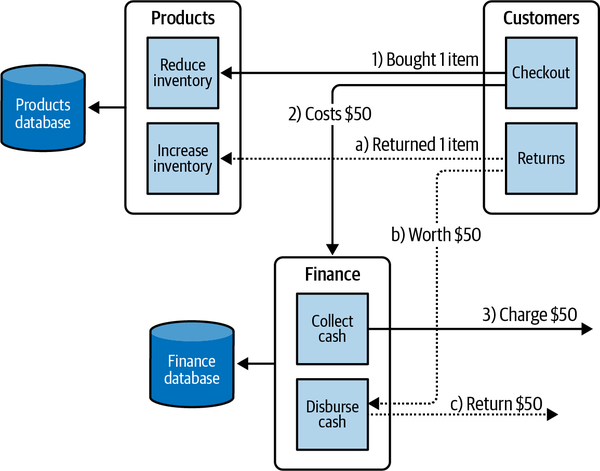
The traditional way of passing messages is by using synchronous REST endpoints. Even though it does not fit my definition of microservice-based communication, companies all over the world use it. Whenever a purchase is made, the checkout service will call a POST endpoint on the collect cash service and consequently call a POST endpoint on the inventory domain. However, synchronous communication using REST will mean the checkout service will wait for the two synchronous operations to complete before it can complete its job. This adds a strong dependency and increases coupling between the finance, inventory, and customer domains.
In such situations, the job of the security professionals is to secure the REST endpoints and the HTTP infrastructure in the application. Chapter 7 talks about the fundamentals of setting up security in transit.
It is my opinion that synchronous communication in this way goes against the very essence of microservices, since the resulting microservices are no longer independent and will continue to maintain a strong relationship. Although some microservice architectures still use synchronous REST communication, most architectural models for microservices dissuade microservice services from using synchronous communication.
Message brokers or queuing systems are commonly used for cross-domain communication in microservices. A service that wants to send a message will put it on a persistent medium. In contrast, the recipient of the message will read from the persistent medium. Communication through message queues occurs asynchronously, which means the endpoints publishing and consuming messages interact with the queue, rather than each other. Producers can add messages to the queue once they are ready, and consumers can handle messages only if they have enough capacity. No producer in the system is ever stalled waiting for a downstream consumer or affected by its reliability. Figure 1-15 illustrates a queue-based communication.
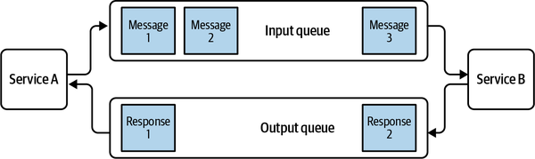
You can see how the role of a security professional increases slightly in this example. Since queues use a persistence layer, security professionals must secure both the queues and the endpoints that service A and service B use to connect to the queue.
The event-based communication paradigm is another popular way of designing microservice communication. An event-based system works on the premise that every state-changing command results in an event that is then broadcast (generally using an entity known as an event broker) to other parts of the application. Other services within other contexts subscribe to these events. When they receive an event, they can update their own state to reflect this change, which could lead to the publication of more events. Figure 1-16 illustrates a sample event-based microservice application. To learn more, check out Building Event-Driven Microservices by Adam Bellemare (O’Reilly), an entire book dedicated to such an architecture.
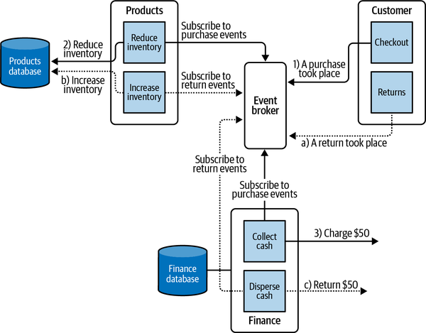
In this example, security professionals must secure the event broker, along with all the necessary infrastructure needed for storing, broadcasting, and hosting the events.
This chapter introduced the basic concepts of threats and risk, and then explained the concept of control and countermeasures. In a cloud environment, the responsibility of implementing controls is shared between the customer and AWS. Understanding where this split lies is the main idea behind cloud security. Even if AWS assumes the responsibility for certain controls, it may still be the customer’s responsibility to configure the controls in such a way that AWS can protect against potential attacks. The chapter also introduced some of the common microservice architecture patterns and their implementation on AWS. The next chapter goes deep into authentication and authorization, two of the most basic controls available that reduce the risk of your application from potential threats.